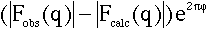
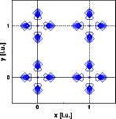
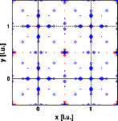

Structure solution
Tasks part 1
Answers part 1
Tasks part 2
Answers part 2
Tasks part 3
Answers part 3
Goto
Contents
|
If we assume that the structure is only partially solved, i.e. we know
only the metal positions, we can calculate phase angles from this partial
structures. These phase angles can be used to calculate the difference
Fourier. The Fourier coefficients are now:

Here PHI is the phase angle calculated from the partial structure solution.
Applied to our example we obtain the following densities: (left image: X-ray
difference density, right image neutron difference density)


And again some homework before you go to
the next chapter:
- The X-ray difference map shows only the oxygen positions, the neutron
difference map shows significant differences at the metal positions as
well. Why? The metal positions are the correct positions!
|